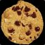
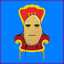

Credits
Brokk
BAMF Project Lead
Final FGD Work, based on Da Spud Lord's FGD

A Boojum Snark
Creator of the
Ultimate Mapping Resource Pack
, which BAMF is based on and a direct upgrade of.

Da Spud Lord
Creator of
An FGD Fit for a LORD
, roughly based on ficool2's FGD.
ficool2
Independant FGD Work and Assets
Tumby (aka Tumbolisu)
Creator of the BAMF website.
Made the water preview images.
Author of:
Water Info Sheet
Lacry
Author of:
Game Mode List
,
Sky List